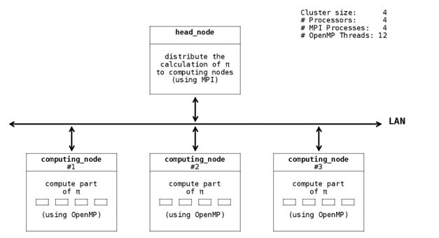
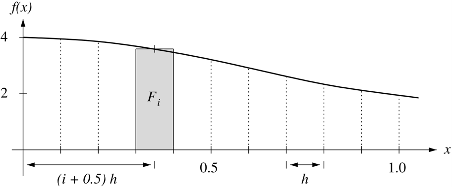
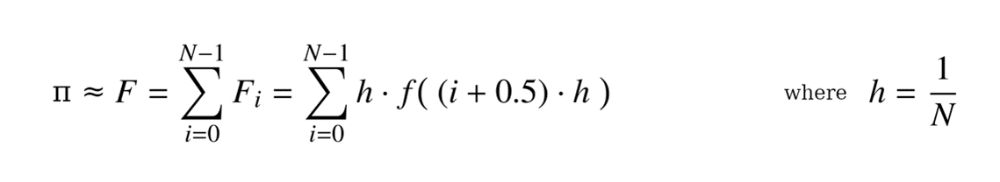
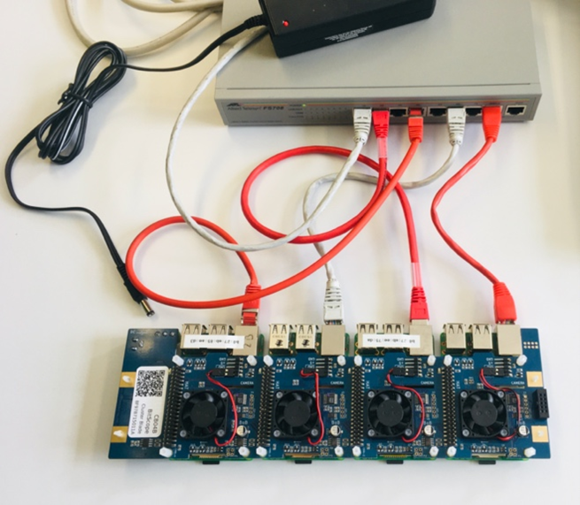

07a - Cluster Computing¶
1. Introduction¶
Message Passing Interface (MPI) really comes into its own in scientific computing. In cluster systems using tightly bound multiple CPUs and/or GPUs or in networked loosely bound computing centres, MPI supports computation complexity and massively parallel systems. The usefulness of the MPI environment is that it is interface agnostic. It can run on a local multicore or on a high performance computing machine made up of distributed computing machines.
As a simple example, we want to calculate the value of PI in a floating-point approximation on a cluster of Raspberry Pi boards. Using such a cluster we can demonstrate MPI parallelisation and OpenMP parallelisation. A cluster of commercial computers networked together to form a massed array of computing power is known as a Beowulf cluster.
There are two lab sessions dedicated to this laboratory. The laboratory will be marked. Group work is highly recommended.
1.1 Calculating PI on a cluster¶
There are several reasons to calculate PI. One is to provide an example of scientific and parallelisable computing of mathematical numbers. A second reason is to find algorithms for efficient computing of numbers to large numbers of decimal places. A third reason is to serve as a benchmark for parallel programs and architectures.
For the purposes of this lab, we want to calculate PI on a computing cluster of four Raspberry Pi boards connected in a LAN. The calculation of PI will be distributed among three computing nodes and one node serving as coordinator. Therefore, we want to parallelise the execution on four individual processes – each on one Raspberry Pi board of the cluster. The four processes will be executed by one mpirun runtime.
1.2 Cluster architecture¶

The number PI can be approximated using the following integral:
Numerically, the integral is determined by dividing the curve under the area f(x) into N rectangles of the area Fi and summing up the partial areas:

The following formula can be used implementing an approximation of PI:

2. Learning Aims¶
First steps with scientific high performance computing (HPC) computing
First steps with MPI
Handling a Beowulf cluster
Calcualtion-time differences on different architectures
3. Task¶
3.1 Setup the cluster of Raspberry Pi boards¶
Follow these steps:
Setup the cluster of Raspberry Pi boards according to the instructions given during the lab session. In the end, it should look like in the picture below (where one ethernet cable is connected to your personal laptop and the cluster blade not yet connected to power): 
Flash the images provided on jupiter, the FTP server from previous labs, on your four SD cards (same procedure as with the U96 board). The image mpc_rpi_head_fs2022.img will be used once for the head node, the image mpc_rpi_child_fs2022.img will be used three times for each computing node.
After flashing the images on your SD cards, insert them into your Raspberry Pi boards and connect the cluster blade to the power source. The Raspberry Pi boards should now boot.
3.2 Setup the LAN¶
Now we will set up the network. The head node has the static IP 192.168.42.100 which was defined beforehand in the file /etc/network/interfaces. The computing nodes will receive an IP address from the head node via DHCP. On the head node, a software package named dnsmasq was installed prior. This package runs as service which is started automatically during the boot process. This service includes a DHCP server which is responsible for the address distribution. Since every Raspberry Pi board is in the same subnet, we can retrieve the other IP addresses of each of the boards serving as computing nodes from the leases file of the DHCP server.
In a second step, we will give each node we want to communicate with in the network a dedicated name, i.e. every Raspberry Pi board is assigned a hostname. This is also helpful when we don’t want to type in the nodes’ IP addresses every time. The hosts file is provided by the device’s operating system and used to map hostnames to IP addresses. Note, we need to configure the hosts file of each board with the assigned names and mapping them to the correct IP addresses.
Follow these steps:
Open a terminal and connect to your Raspberry Pi which serves as head node via SSH (Use the standard password “raspberry” to log in and answer the security question regarding authenticity with “yes”):
ssh pi@192.168.42.100
Retrieve the IP addresses of the other boards (and write them down somewhere):
cat dnsmasq.leases
Edit the host file /etc/hosts and add the hostname mapping to the IP addresses you just retreived:
#MPI Cluster Setup 192.168.42.100 head-node "IP_of_Pi1" computing-node-0 "IP_of_Pi2" computing-node-1 "IP_of_Pi3" computing-node-2
These hostnames will be later used for mpirun.
Open three more terminals and connect to the other boards via SSH, using the retrieved IPs from above.
For each computing node, edit the host file /etc/hosts and add the hostname mapping to the IP addresses. Here we will need the mapping for the head node and the mapping for the current computing node.
#MPI Cluster Setup 192.168.42.100 head-node "IP_of_PiX" computing-node-X
3.3 Setting up SSH¶
Our nodes will be communicating over the network via SSH. We will establish passwordless SSH in order to enable an easier login and communication between the nodes.
Follow these steps:
On the head node:
Generate keys, in our case RSA keys:
ssh-keygen -t rsa
(In the prompt, just press enter, no need to specify a file or passphrase.)
Copy the keys to the other nodes’ list of authorized_keys and connect to each computing node via ssh:
ssh-copy-id -i /home/pi/.ssh/id_rsa pi@"IP_of_PiX" ssh@"IP_of_PiX" exit
(Note, we are still on the head node, repeat each step for every computing node X.)
For the communication to work with the assigned hostnames, you need to execute the following commands for each computing node:
ssh computing-node-X exit
On each of the computing nodes:
Generate keys, in our case RSA keys:
ssh-keygen -t rsa
(In the prompt, just press enter, no need to specify a file or passphrase.)
Copy the keys to the head node’s list of authorized_keys and connect to the head node via ssh:
ssh-copy-id -i /home/pi/.ssh/id_rsa pi@192.168.42.100 ssh@192.168.42.100 exit(Note, repeat these steps on every computing node X.)
3.5 Calculate PI on a cluster of Pis¶
When we are all set up, we want to calculate PI on our cluster of Raspberry Pi boards. MPI is used for distributing the calculation among the boards and for the communication between them. OpenMP is used to parallelise the calculation within each calculating node.
Follow these steps:
On the head node, switch to the folder mpc_cloud and edit the cluster_cpmputing_template.c file according to the following steps.
Implement the calculation of PI in OpenMP with the formula above using the template given. (See calc_subsum_pi(…) for instructions.)
Fill in where necessary the MPI communication for the cluster network.
Compile as known and don’t forget to add -fopenmp:
mpicc -o cluster_computing cluster_computing_template.c -fopenmp
Execute mpirun with the previously determined hostnames. Note the value calculated and the process time.
Change the number of rectangles used to calculate the total area beneath the curve. Use several different values. How does it affect the approximated value of PI and why?
4. Evaluation¶
This laboratory is evaluated on the basis of the discussions with you on your code/solution. You can receive a maximum of 5 marks for this laboratory.
A perfect solution is good.
I welcome in-depth discussions on the contents of the lab and your solutions during the implementation process.
5. Version¶
Version |
Date |
By |
Comments |
Class Level |
Module |
|---|---|---|---|---|---|
V1.1 |
05.2022 |
donn |
Ported to Pi-Blades |
6S |
MPC |
V1.0 |
02.2021 |
donn |
First version |
6S |
MPC |